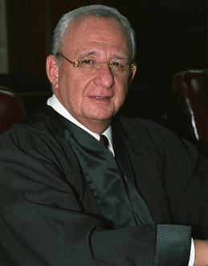

Ministro Juan N. Silva Meza
Nació el 13 de septiembre de 1944 en México, D.F.
Concluyó la licenciatura en la Facultad de Derecho de la Universidad Nacional Autónoma de México, en la que presentó el examen profesional el 21 de agosto de 1970, con la tesis El Artículo 333 del Código Penal.
Secretario de Tribunal en el Primer Tribunal Colegiado en Materia Penal del Primer Circuito.
Secretario de Estudio y Cuenta de la Primera Sala de la Suprema Corte de Justicia de la Nación.
Juez de Distrito en Materia Penal en el Distrito Federal.
Magistrado de Circuito en el Tribunal Colegiado del Décimo Tercer Circuito en Oaxaca, Oax.
Magistrado del Segundo Tribunal Unitario del Primer Circuito.
Magistrado de la Sala de Segunda Instancia del Tribunal Federal Electoral.
Ministro de la Suprema Corte de Justicia de la Nación.
Ministro Presidente de la Primera Sala de la Suprema Corte de Justicia de la Nación (2002-2003).
Por oposición, Profesor titular de Nociones de Derecho Positivo Mexicano en la Escuela Nacional Preparatoria, UNAM.
Por oposición, Profesor titular de Derecho Penal, Facultad de Derecho, UNAM.
Profesor de Derecho Penal, Fiscal y Delitos Fiscales, División de Estudios de Posgrado, Facultad de Derecho, UNAM.
Profesor de Delitos Fiscales, Instituto Nacional de Ciencias Penales.
Profesor de Derecho Penal en el Instituto de Especialización Judicial.
Durante más de treinta años ha dictado conferencias y participado como ponente en cursos y seminarios, en la mayoría de las escuelas, institutos y facultades de derecho del país. También ha participado en conferencias y seminarios en el extranjero.
Coautor de la obra Dinámica del Procedimiento Penal, el Amparo Penal Directo e Indirecto. Metodología para el Control y Seguimiento. Editorial Porrúa, México.
Prologuista de textos de amparo penal y delitos fiscales.
Autor de diversos artículos sobre temas jurídicos, publicados en libros y revistas jurídicos.
Miembro de la delegación de la Suprema Corte de Justicia de la Nación, invitada por el Ministerio de Justicia de Francia, en misión de intercambio al Tribunal Constitucional, Consejo de Estado, Corte de Casación, Escuela de la Magistratura en Burdeos y París, y al Consejo General de la Judicatura de aquel país, en 1998.
Miembro de la comisión designada por el Pleno de la Suprema Corte de Justicia, para formalizar el primer intercambio bilateral de colaboración México-España, ante el Consejo General de la Judicatura y otras autoridades jurisdiccionales de ese país, celebrado en Madrid, España (Noviembre de 2001).
Conferenciante en el Aula Iberoamericana de la Escuela Judicial del Consejo General de la Judicatura, en Barcelona, España (2001).
Conferenciante invitado por la Facultad de Derecho de la Universidad de Extremadura, en Cáceres, España (2001).
Miembro de la comisión especial integrada por el Pleno de la Suprema Corte de Justicia de la Nación para la elaboración y actualización del proyecto para una nueva Ley de Amparo, teniendo a su cargo la redacción del mismo.
Presidente de la comisión de Ministros para la elaboración del Apéndice al Semanario Judicial de la Federación 1917-2000.
Representante de la Suprema Corte de Justicia de la Nación como observador, ante el Consejo de Europa (Estrasburgo, Francia) en 2003.
Miembro de número de la Academia Mexicana de Ciencias Penales.